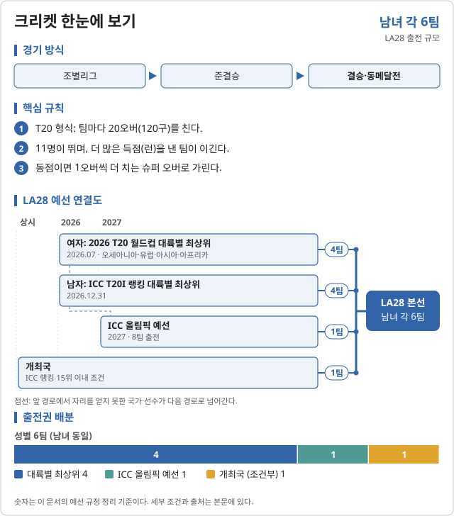
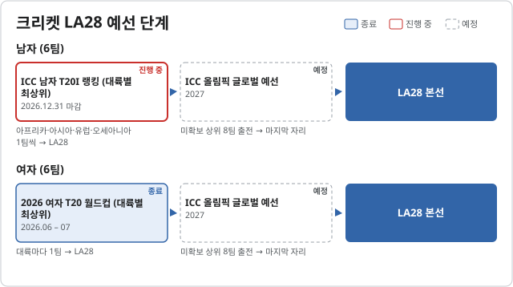

크리켓 (Cricket)

LA28 출전 확정 2026-11-06 기준
| 국가 | 경로 | 비고 |
|---|---|---|
| 2026 여자 T20 월드컵 · 오세아니아 최상위 | ||
| 2026 여자 T20 월드컵 · 유럽 최상위 | 잉글랜드 | |
| 2026 여자 T20 월드컵 · 아시아 최상위 | ||
| 2026 여자 T20 월드컵 · 아프리카 최상위 |
| 국가 | 경로 | 비고 |
|---|---|---|
| 개최국 | T20I 랭킹 15위 이내 조건 충족 |
미국 여자는 2026.12.31까지 T20I 랭킹 15위 안에 들어야 개최국 자리를 얻는다. 남자 대륙별 4자리는 2026.12.31 T20I 랭킹으로 정한다. 마지막 자리는 8팀이 겨루는 ICC 올림픽 예선에서 가린다.
LA28 예선 단계 2026.10.31 기준


| 단계 | 시기 | 상태 | 다음 단계 | 결과·진출 | 한국 |
|---|---|---|---|---|---|
| ICC 남자 T20I 랭킹 (대륙별 최상위) | 2026.12.31 마감 | 진행 중 | 아프리카·아시아·유럽·오세아니아 1팀씩 → LA28 | ||
| ICC 올림픽 글로벌 예선 | 2027 | 예정 | 미확보 상위 8팀 출전 → 마지막 자리 |
| 단계 | 시기 | 상태 | 다음 단계 | 결과·진출 | 한국 |
|---|---|---|---|---|---|
| 2026 여자 T20 월드컵 (대륙별 최상위) | 2026.06 – 07 | 종료 | 대륙마다 1팀 → LA28 | ||
| ICC 올림픽 글로벌 예선 | 2027 | 예정 | 미확보 상위 8팀 출전 → 마지막 자리 |
미국 남자는 2026.06.30–12.31 사이 T20I 랭킹 15위 안에 들어 개최국 자리를 확정했다. 미국 여자는 아직 정해지지 않았다.
2026 주요 대회 결과 2026-11-07 09:54 KST
위키백과 대회 문서에서 자동으로 모은다. 대회 중에는 한 시간마다 새로 읽는다. 한국 선수가 있는 줄은 붉게 칠했다. 하계 실시간 전체 →
아이치·나고야 아시안게임 아이치·나고야 · 09.19~10.04 종료 결과 2/2종목 · 한국 금0 은0 동0
| 종목 | 금 | 은 | 동 |
|---|---|---|---|
| Medalists | |||
| 남자 tournament | |||
| 여자 tournament | |||
메달 순위:  인도 2-0-0 ·
인도 2-0-0 ·  파키스탄 0-1-1 ·
파키스탄 0-1-1 ·  스리랑카 0-1-1
스리랑카 0-1-1
출처: 위키백과 Cricket at the 2026 Asian Games · 2026-11-06 22:37 읽음
예선 규정
| 경로 | 팀 수 | 단위 |
|---|---|---|
| 남자 · 개최국 | 1 | 팀 |
| 남자 · ICC 남자 T20I 랭킹 · 대륙별 최상위 | 4 | 팀 |
| 남자 · 최종 글로벌 예선 (FOGQT) | 1 | 팀 |
| 여자 · 개최국 | 1 | 팀 |
| 여자 · 여자 T20 월드컵 2026 · 대륙별 최상위 | 4 | 팀 |
| 여자 · 최종 글로벌 예선 (FOGQT) | 1 | 팀 |
예선 일정
| 대회 | 기간 | 장소 |
|---|---|---|
| ICC 남자 T20 랭킹 마감 | 2026.12.31 | 미정 |
| ICC 여자 T20 랭킹 마감 | 2027.03.01 | 미정 |
| 최종 세계 예선 | 2027 | 미정 |
직전 올림픽 메달리스트
2024 파리 올림픽 미채택 · 해당 없음
대한민국
확보 쿼터: 미정. 예선 결과 발표 후 갱신한다.